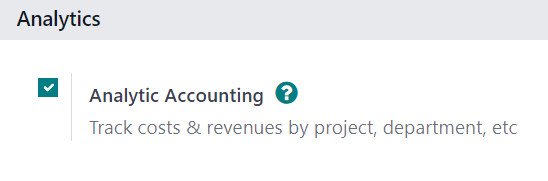

根据工时和材料开具发票¶
基于时间和/或材料的发票通常用于无法准确估算项目规模或项目要求可能发生变化的情况。
这与固定价格合同不同。在固定价格合同中，客户同意支付一个指定的总价来履行合同，而无论需要支付给员工、分包商、供应商等的费用是多少。
Odoo 销售 应用程序可为时间和其他各种费用（如交通、住宿）以及完成订单所需的采购开具发票。
应用程序和设置配置¶
首先，为了准确跟踪项目进度，必须安装 Odoo 项目 和 会计 应用程序。
要安装*项目*应用程序，请导航至 。然后，在 应用程序 页面上找到 项目 应用程序块，并点击 激活。页面会自动刷新并返回 Odoo 主仪表板，此时可访问 项目 应用程序。
重复同样的过程安装 会计 应用程序。
安装后，从 Odoo 主仪表板点击 会计 应用程序图标，并导航至 。在 设置 页面，向下滚动到 分析 部分，确保选中 分析会计 旁边的方框。
然后，点击 保存，以保存所有更改。
然后，导航至 。在 设置 页面的 时间管理 部分，确保选中 工时单 功能旁边的方框。
然后，点击 保存，以保存所有更改。

服务产品配置¶
在*项目*应用程序中激活*工时单*功能后，现在可以为项目花费的时间开具发票，但**仅限于**进行了以下产品配置的情况。
重要
**只有**在产品表单中将*服务*设置为*产品类型*的产品，才能为项目所用时间开具发票。
要配置服务产品，首先导航至 。在 产品 页面，选择要配置的服务产品，或点击 新建，创建新产品。
在产品表单的 常规信息 选项卡中，将 产品类型 设为 服务。然后，打开 发票政策 字段的下拉菜单，选择 基于工时单。
接下来，从 根据订单创建 下拉菜单中选择 项目/& 任务。该设置表示，当使用该特定服务产品创建销售订单时，将在 项目 应用程序中创建一个新项目和任务。

注解
可从 根据订单创建 下拉菜单中选择 任务 选项。如果选择 任务，请从 项目 字段选择任务将出现的现有项目，只有在 根据订单创建 字段中选择 任务 时才会出现。
将花费的时间添加到销售订单中¶
使用正确的*开票策略*和*订单创建*选项对服务产品进行适当配置后，就可以在销售订单中添加所花费的时间。
要查看实际操作，请导航至 以打开空白报价表。然后，继续添加 客户，并在 订单行`选项卡中点击 :guilabel:`添加产品，然后从下拉菜单中正确选择 配置服务产品。
然后，点击 确认，以确认订单。
确认销售订单后，订单表顶部会出现两个智能按钮：项目 和 任务。

如果点击 项目 智能按钮，将显示与此销售订单相关的特定项目。如果点击 :guilabel:`任务 智能按钮，则会显示与此销售订单相关的特定项目任务。在 项目 应用程序中也可以访问这两个按钮。
要添加用于销售订单的时间，请点击 任务 智能按钮。
在任务表单中，选择 工时单 选项卡。在 工时单 选项卡中，可分配员工参与项目工作，员工或创建销售订单的人员可添加他们在任务上花费的时间。
要添加员工和任务所用时间，请点击 工时单 选项卡中的 添加行。然后，选择适当的 日期 和 员工。还可在 说明 栏中添加这段时间内工作的简要说明，但不是必需。
最后，在 已花费小时数 栏中输入任务的工作时间，然后点击离开，完成 工时单 标签中的这一行。
注解
在 已花费小时数 列输入的时间会立即以百分比的形式反映在 已分配时间 字段（位于任务表单顶部附近）中，该字段反映了到目前为止已完成的总分配工时。
同样的信息在 工时单 标签底部的 已花费小时数 和 剩余小时数 字段中以数字小时数表示。

无论该项目有多少员工和工时，都要重复这一过程。
为已花费的时间开具发票¶
将所有必要的员工和花费的时间添加到项目任务后，返回销售订单，向客户开具这些工时的发票。要执行此操作，请点击任务表单顶部的 销售订单 智能按钮，或通过屏幕左上角的面包屑链接返回销售订单。
回到销售订单表单，添加到任务的时间将反映在 订单行 选项卡（在 已发送 列）和销售订单顶部新的 已记录小时数 智能按钮中。
要为客户在项目上花费的时间开具发票，请点击 创建发票，并在弹出的 创建发票 窗口中选择 普通发票。然后，点击 创建发票草稿。
这样就会显示 客户发票草稿，清楚显示 发票行 选项卡中已完成的所有工作。
小技巧
注意 客户发票 中的 分析分配 列，因为该信息对于确保正确、准确地完成其他时间/材料发票任务非常必要。

点击 确认，以确认发票并继续开票流程。
费用配置¶
为了追踪与销售订单相关的费用并开具发票，**必须**安装 Odoo 费用 应用程序。
要安装*费用*应用程序，请导航至 。然后，在 应用程序 页面上找到 费用 应用程序块，并点击 激活。
页面会自动刷新并返回到 Odoo 主仪表板，现在可以访问 费用 应用程序。
在销售订单中添加费用¶
要在销售订单中添加费用，首先要导航到 应用程序。然后，在 费用 主仪表板上点击 新建，显示一个空白的费用表单。
在费用表单中，添加费用的 描述 字段（例如，“酒店住宿”、“机票”）。然后，在 类别 字段，从下拉菜单中选择适当的选项（例如 餐食、 里程、差旅& 住宿）。
注解
可通过导航至 添加和修改开支类别。
然后，在 总 字段中输入费用总额，以及任何可能适用的 包括税费 字段。然后，确保选择了正确的 员工，并在 支付人`字段中指定由谁支付费用： :guilabel:`员工（待报销）`或 :guilabel:`公司。
接下来，在 客户再开发票 字段中，从下拉菜单中选择相应的销售订单。然后，也从 分析分配 字段中选择相同的销售订单信息。
注解
如果销售订单包含根据*工时单*、*里程碑*或*交付数量*计费的服务产品，则 分析分配 字段将**只有**相应的销售订单作为选项。

如果有任何收据需要上传并附加到费用中，请点击 :guilabel:`附加收据`按钮，并将必要的文件上传到费用中。这**并非**要求，但可能会影响费用是否获得批准。
输入所有信息后，点击 创建报告，创建费用报告，详细说明刚才输入的所有支出信息。

然后，可以选择 提交给经理 进行审批。一旦获得批准，就会出现 在下一张工资单中报告。
要展示本例中的完整流程，请选择 提交给经理。然后，经理点击 批准，以批准该支出，再点击 发布日记账条目 将该支出记入会计日记账。
开票费用¶
要为销售订单 <sales/invoicing/add-expenses-sales-order>` 中的 费用开具发票，请从 应用程序或 应用程序中的费用报告导航到相关销售订单。在费用报告中，点击页面顶部的 销售订单 智能按钮。
如果费用报告与销售订单有关联，则新配置的费用现在在 订单行 选项卡中有自己的一行，并可向客户开具发票。

要就销售订单上的费用向客户开具发票，请点击 创建发票，在弹出的 创建发票 窗口中选择 普通发票，然后点击 创建发票草稿。
这样就会显示费用的 客户发票草稿。然后，就可以像往常一样完成发票开具流程。

采购配置¶
为了给客户开具销售订单上的购物发票，**必须**安装*采购*应用程序。
要安装*采购*应用程序，请导航至 。然后，在 应用程序 页面上找到 采购 应用程序块，并点击 激活。页面会自动刷新并返回 Odoo 主控制面板，此时可访问 采购 应用程序。
将采购添加到销售订单¶
要在销售订单中添加采购，必须先创建采购订单。要创建采购订单，请导航至 以显示空白的采购订单表单。
首先，在采购订单中添加 供应商。然后，在 产品 选项卡下，点击 额外列选项 下拉菜单，该菜单由两条带点的水平线表示，位于列标题的最右侧。从下拉菜单中选择 分析分布。

将 分析分配 列添加到采购订单表的 产品 选项卡的标题后，继续将产品添加到采购订单。要执行此操作，请点击 添加产品，然后从下拉菜单中选择所需的产品。对所有要添加的产品重复上述步骤。
重要
要在销售订单上正确开具采购发票，采购订单上的产品**必须**标记为 可开票，其 发票政策`设置为 :guilabel:`交付数量，并在其产品表单的 :guilabel:`重新开具发票开支`字段中选择 :guilabel:`按成本计算`选项。

然后，选择与该采购订单相关的销售订单相关联的适当 分析分配。要执行此操作，请点击空白的 分析分配 字段，弹出 分析 窗口。
然后，从 部门 下拉菜单中，选择与要开具采购发票的所需销售订单相关联的分析分配。

在采购订单的 产品 选项卡中输入所有信息后，点击 确认订单 确认订单。然后，在收到产品后点击 接收产品。这将创建一个收据表单。
注解
如果在验证产品收据前必须输入序列号/批次号，则在收据表格上点击产品行最右侧由四条横线组成的 详情 图标。
这将显示 详细操作 选项卡，可在其中添加必要的 批次/序列号 和 已完成 数量。准备就绪后，点击 确认，以确认数据。
然后，点击 验证 以验证订购单。
接下来，通过页面顶部的面包屑链接返回采购订单，然后点击:guilabel:创建订单 创建供应商账单，该账单可在所附销售订单上向客户开具发票。

注解
确认之前，请务必在 供应商账单草稿 上输入 账单日期。如果未输入 账单日期，则会出现错误窗口，要求在确认前输入该信息。
然后，点击 确认，以确认供应商账单，该账单就会自动添加到销售订单中，并可直接向该订单所附的客户开具发票。
发票采购¶
要为销售订单上的采购给客户开发票，首先 将采购添加到销售订单，然后在 应用程序中导航到所需的销售订单。
在附于采购订单的销售订单上，已采购产品现在在 订单行 选项卡下有自己的产品行，可以开具发票。

要向客户开具购物发票，只需点击 创建发票，在弹出的 创建发票 窗口中选择 普通发票，然后点击 创建发票草稿。
系统会在 发票行 选项卡中，显示带有新添加的订购单产品的 客户发票草稿。

要完成发票开具流程，请点击 确认 以确认发票，然后在弹出的 登记付款 表单中点击 登记付款。